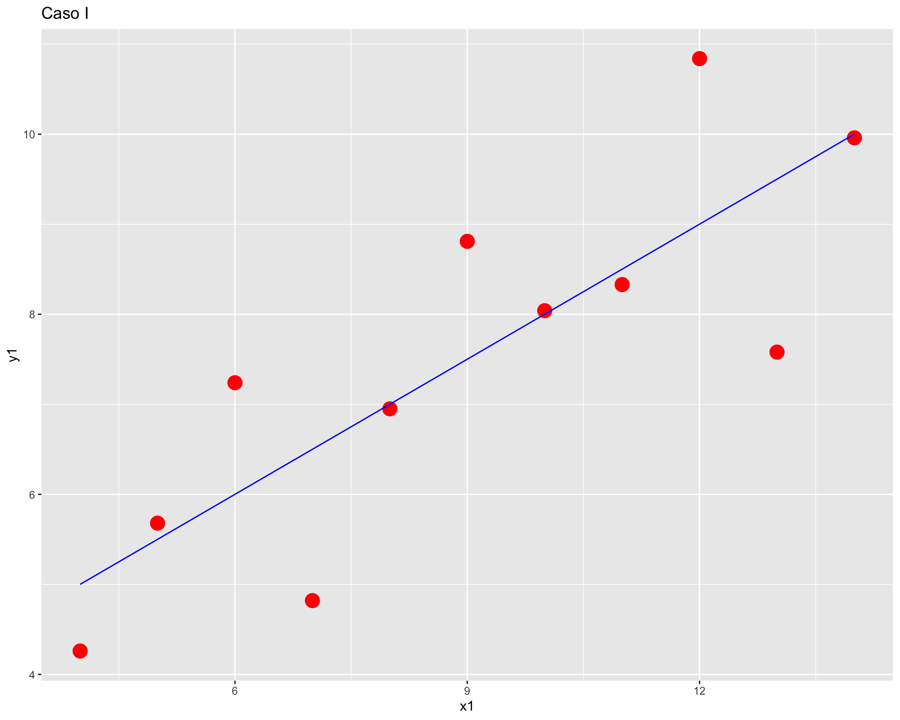
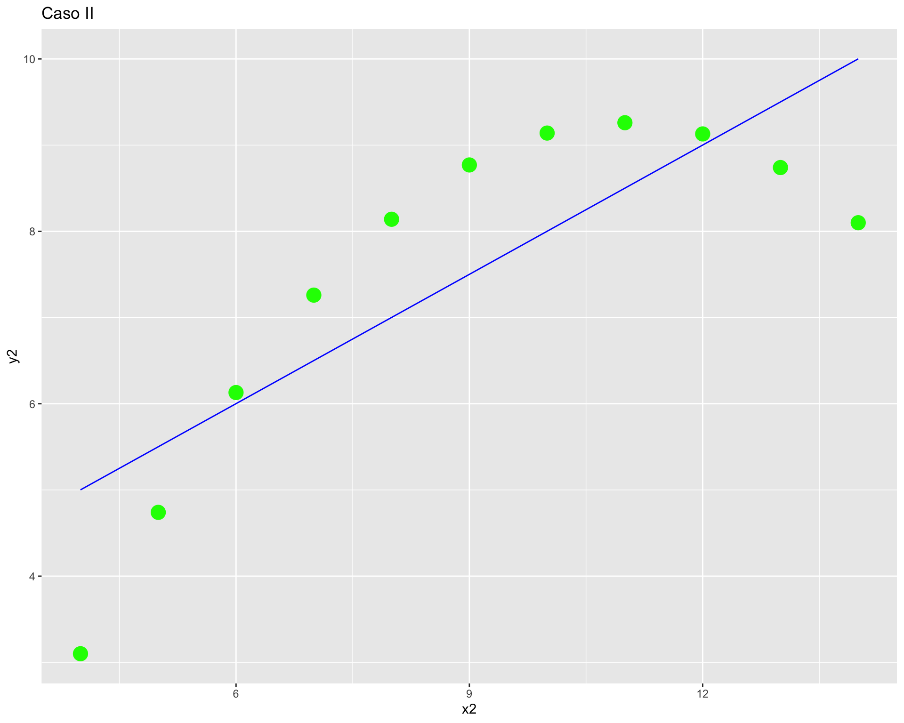

pacman::p_load(ggplot2)Cálculo y reporte de correlación
Completar hasta as 11:59 PM del martes, 22 de agosto de 2023
Objetivo de la práctica
El objetivo de esta guía práctica es aprender a calcular y graficar la correlación entre dos variables utilizando R.
En detalle, aprenderemos:
- Qué es una correlación
- Cuál es la correlación de Pearson
- Cómo calcular una correlación de Pearson y graficarla
1. Qué es la Correlación
¿Cómo puedo saber si una variable se encuentra asociada a otra variable?
Como vimos en clases, la correlación es una medida estadística que describe la relación entre dos variables. En otras palabras, indica cómo cambian juntas dos variables en relación una a la otra. Cuando existe correlación entre dos variables, el cambio en una de ellas tiende a estar asociado con un cambio en la otra variable.
En términos concretos, lo que observamos es cómo se comportan los valores de dos (o más) variables para cada observación, y si podemos suponer que ese comportamiento conjunto tiene algún patrón. Hay formas de confimar ese comportamiento conjunto y también distintas formas de comportamiento conjunto. Partamos por lo segundo.
Existen distintos tipos de correlación, o formas en que dos variables pueden estar asociadas. Por ejemplo:
- Correlación lineal o de Pearson
- Correlación de Spearman
- Correlación de Kendall
- etc
Comenzaremos con la vista la última clase: la Correlación de Pearson.
2. Cuál es la correlación de Pearson
La correlación de Pearson (o coeficiente de correlación de pearson) también llamada correlación lineal es una medida estadística que cuantifica la relación lineal entre dos variables continuas. Esta medida va desde -1 hasta 1, donde:
- r=1: Correlación positiva perfecta. Cuando una variable aumenta, la otra también aumenta en proporción constante.
- r=−1: Correlación negativa perfecta. Cuando una variable aumenta, la otra disminuye en proporción constante.
- r=0: No hay correlación lineal entre las variables. No hay una relación lineal discernible entre los cambios en las variables.
Cuanto más cercano esté el valor de r a 1 o -1, más fuerte será la correlación. Cuanto más cercano esté a 0, más débil será la correlación.
 Fuente: Moore (2010) Estadística aplicada básica, pp 125.
Fuente: Moore (2010) Estadística aplicada básica, pp 125.
En el siguiente enlace pueden visualizar la correlación para dos variables cambiando la fuerza y el sentido de esta, al mismo tiempo que les permite observar la varianza compartida entre ambas variables.
¡Veamos cómo se hace en R!
3. Cómo calcular la correlación de Pearson y graficarla
Coeficiente de correlación de Pearson
Podemos usar el ejemplo visto la clase antepasada, pero primero cargamos las librerías necesarias:
Simulamos datos para 8 casos
- con 8 niveles de educación (ej: desde basica incompleta=1, hasta postgrado=8), y
- 12 niveles de rangos de ingreso (ej: desde menos de 100.000=1 hasta más de 10.000.000=12)
educ <- c(2,3,4,4,5,7,8,8)
ing <- c(1,3,3,5,4,7,9,11)
data <- data.frame(educ,ing)Para conocer el valor de la correlación entre ambas variables de la base de datos podemos usar la función cor().
cor(data$educ, data$ing)[1] 0.9512367Como vimos en clases, el valor de la correlación va entre -1 y 1, donde el valor 0 significa que las dos variables no se encuentran correlacionadas, y el valor -1 y 1 significa que se encuentran completamente correlacionadas, positiva y negativamente, respectivamente.
En este caso, un valor de 0.95 es muy alto, y significa que las variables ingreso y educación, en nuestra base de datos, se encuentran fuertemente correlacionadas.
Diagrama de dispersión
Sin embargo, siempre es recomendable acompañar el valor de la correlación con una exploración gráfica de los datos. El gráfico o diagrama de dispersión es una buena herramienta, ya que muestra la forma, la dirección y la fuerza de la relación entre dos variables cuantitativas.
Este tipo de gráfico lo podemos realizar usando la librería ggplot2.
plot1 <- ggplot(data,
aes(x=educ, y=ing)) +
geom_point(colour = "red",
size = 5)
plot1En el gráfico podemos ver como se crea una nube de puntos en las intersecciones de los valores para ambas variables de cada observación.
Además podemos agregar una recta de regresión:
plot2 <- ggplot(data,
aes(x=educ, y=ing)) +
geom_smooth(method = "lm", se = FALSE, color="blue", size=0.5) +
geom_point(colour = "red",
size = 5)
plot2`geom_smooth()` using formula = 'y ~ x'
Ahora, revisaremos un muy buen ejemplo de la importancia de la exploración gráfica de los datos: El cuarteto de Anscombe.

Primero, crearemos el data.frame con los datos.
anscombe <- data.frame(
x1 = c(10, 8, 13, 9, 11, 14, 6, 4, 12, 7, 5),
y1 = c(8.04, 6.95, 7.58, 8.81, 8.33, 9.96, 7.24, 4.26, 10.84, 4.82, 5.68),
x2 = c(10, 8, 13, 9, 11, 14, 6, 4, 12, 7, 5),
y2 = c(9.14, 8.14, 8.74, 8.77, 9.26, 8.10, 6.13, 3.10, 9.13, 7.26, 4.74),
x3 = c(10, 8, 13, 9, 11, 14, 6, 4, 12, 7, 5),
y3 = c(7.46, 6.77, 12.74, 7.11, 7.81, 8.84, 6.08, 5.39, 8.15, 6.42, 5.73),
x4 = c(8, 8, 8, 8, 8, 8, 8, 19, 8, 8, 8),
y4 = c(6.58, 5.76, 7.71, 8.84, 8.47, 7.04, 5.25, 12.50, 5.56, 7.91, 6.89)
)Calculamos la correlación para cada uno de los pares de datos
cor(anscombe$x1, anscombe$y1)[1] 0.8164205cor(anscombe$x2, anscombe$y2)[1] 0.8162365cor(anscombe$x3, anscombe$y3)[1] 0.8162867cor(anscombe$x4, anscombe$y4)[1] 0.8165214Podemos observar que todas los valores de las correlaciones son muy parecidos hasta el tercer decimal, por lo tanto podríamos pensar que todos los pares de columnas se encuentran correlacionados de manera similar.
Pero, ¿será suficiente con esa información? Pasemos a revisar los gráficos de dispersión de cada par de variables.
ggplot(anscombe, aes(x = x1, y = y1)) +
geom_point(colour = "red",
size = 5) +
geom_smooth(method = "lm", se = FALSE, color="blue", size=0.5) +
labs(title = "Caso I")`geom_smooth()` using formula = 'y ~ x'
ggplot(anscombe, aes(x = x2, y = y2)) +
geom_point(colour = "green",
size = 5) +
geom_smooth(method = "lm", se = FALSE, color="blue", size=0.5) +
labs(title = "Caso II")`geom_smooth()` using formula = 'y ~ x'
ggplot(anscombe, aes(x = x3, y = y3)) +
geom_point(colour = "yellow",
size = 5) +
geom_smooth(method = "lm", se = FALSE, color="blue", size=0.5) +
labs(title = "Caso III")`geom_smooth()` using formula = 'y ~ x'ggplot(anscombe, aes(x = x4, y = y4)) +
geom_point(colour = "orange",
size = 5) +
geom_smooth(method = "lm", se = FALSE, color="blue", size=0.5) +
labs(title = "Caso IV")`geom_smooth()` using formula = 'y ~ x'
Resumen
Hoy aprendimos a generar documentos dinámicos con RMarkdown. En detalle, aprendímos:
- Qué es una correlación
- Cuál es la correlación lineal de Pearson
- Cómo calcular una correlación de Pearson y graficarla
Reporte de progreso
Completar el reporte de progreso correspondiente a esta práctica aquí. El plazo para contestarlo es hasta el día viernes de la semana en la que se publica la práctica correspondiente.